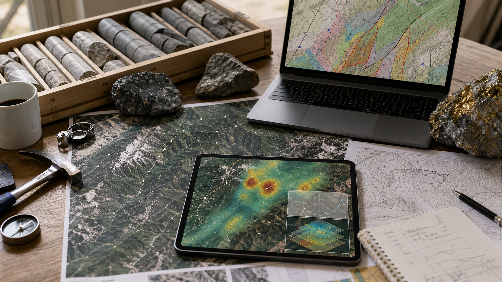

为什么关注 AI + 地学智能应用
从人工智能、遥感影像、无人机数据和三维建模开始，记录一个面向地学场景的技术博客。
阅读全文AI for Geoscience · Remote Sensing · Projects
面向人工智能与地学智能应用研究，聚焦遥感解译、地质灾害预测、 三维地质建模、无人机图像识别和项目实践。

从人工智能、遥感影像、无人机数据和三维建模开始，记录一个面向地学场景的技术博客。
阅读全文研究方向、项目与竞赛、学生实践和技能路线页面已整理为独立栏目，首页只保留导航和最新内容。
这个博客聚焦“AI + 地学智能应用”，更重视学习记录、项目实践和可持续更新的内容沉淀。
了解更多